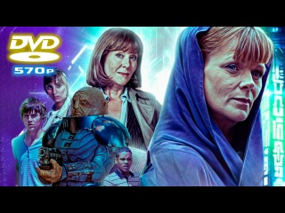
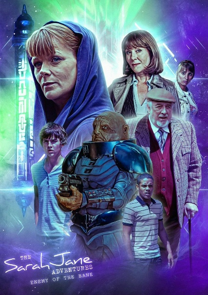

Enemy of the Bane
Дата выхода: 1-8 декабря 2008
Формат: 2 эпизода по 30 мин.
| Варианты озвучек: | * Разные: смотрите по инструкции |
|---|---|
| Скачивание и просмотр: |
Миссис Вормвуд похищает Гиту Чандру, что оказывается ловушкой для Сары Джейн - Вормвуд объединилась с ещё одним прошлым врагом, сонтаранцем Каагом. Они планируют высвободить древнюю инопланетную силу, и Сара Джейн обращается за помощью к старому другу.
